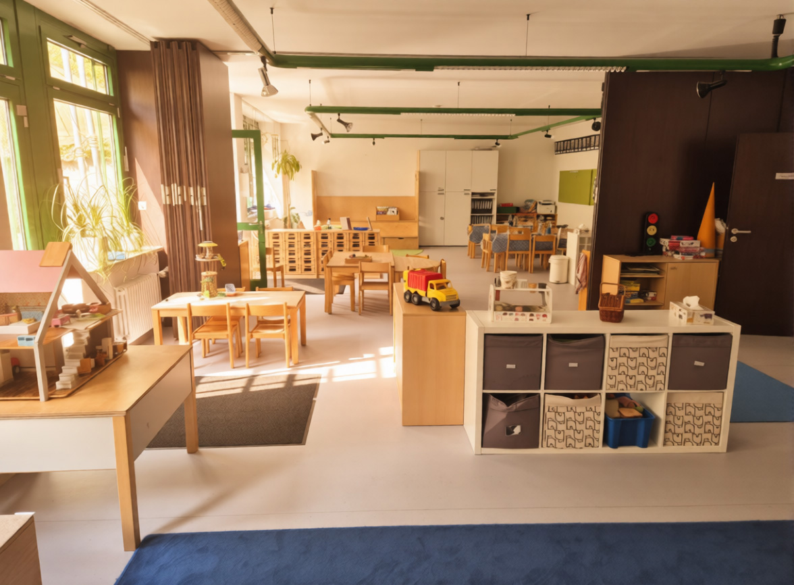
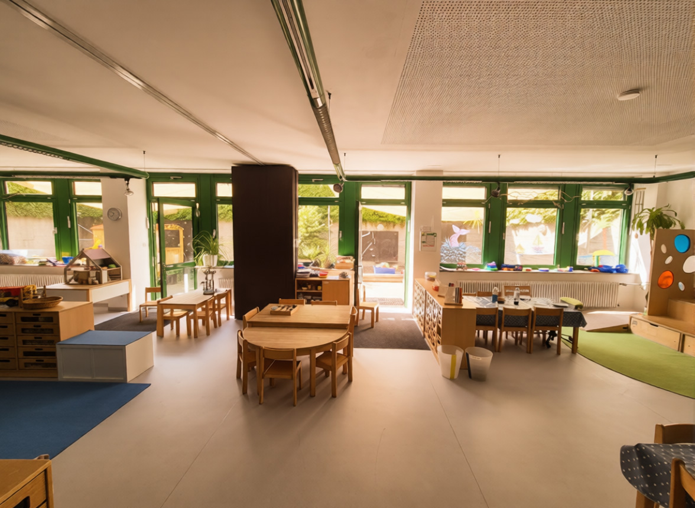

Konzeption
Eine enge, authentische Zusammenarbeit mit den Eltern bildet die Basis unserer familiären Atmosphäre. Wir gehen auf individuelle Bedürfnisse der Eltern und Kinder ein und stehen beratend zur Verfügung.
In einem vertrauensvollen und emphatischen Umfeld legen wir Wert auf individuelle Förderung nach dem Bayerischen Bildungs- und Erziehungsplan. Wir leben nach dem situativen Ansatz und bieten in unseren liebevoll gestalteten Räumen und dem Außenbereich Platz für kreative Entfaltung, Ruhe und Bewegung.
Die ausführliche Konzeption unserer Einrichtung findet ihr hier:
Konzeption
Tagesablauf Kindergarten
07:00 - 07:30
Frühöffnung
07:30 - 08:30
Zeit zum Ankommen
Gleitende Brotzeit bis 10 Uhr.
08:30 - 09:00
Morgenkreis
• Begrüßung
• Erzählrunde
• Raum für Gespräche
09:00 - 10:30
Pädagogische Angebote und Freispielzeit
10:30 - 11:30
Aufenthalt im Freien
11:30 - 12:15
gemeinsames Mittagessen
12:15 - 13:30
Ruhezeit
• Leserunde
• Förderangebote am Tisch
• Mittagsschlaf für die Jüngeren
13:30 - 14:30
gemeinsame Brotzeit, Freispiel, flexible Angebote
bis 15:00 / 15:30
Aufenthalt im Freien
Von 08:30 Uhr bis 12.00 Uhr keine Bring- und Abholzeit
Tagesablauf Hort

11:30/12:15 - 12:45
Aufenthalt im Freien (Nach Schulschluss)
Die Schulanfänger werden in den ersten Wochen von der Schule abgeholt. Schritt für Schritt wird der selbständige Weg zum Hort geübt und verlängert.
13:10 - 13:45
Gemeinsames Mittagessen
13:45 - 15:00
Hausaufgaben
Kreative Angebote, Projektarbeit.
14:45 - 15:30
Aufenthalt im Freien
Von 13:45 Uhr bis 14:30 Uhr keine Bring- und Abholzeit